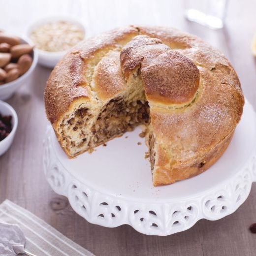
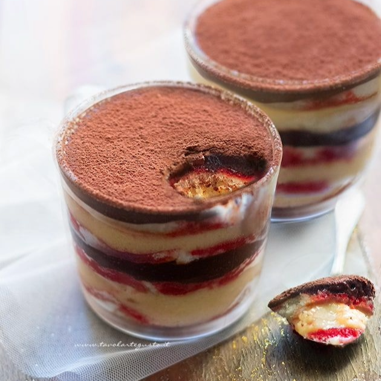

Ricette Dolci
In questa sezione troverai tutte le ricette dolci tipiche delle regioni italiane, adatte ad ogni occasione.

Friulia Venezia Giulia -La Gubana-
Ingredienti:
-Lievito di birra secco 3 g
-Farina 00 150 g
-Latte intero a temperatura ambiente 85 g
Per l'impasto (per uno stampo di 22 cm di diametro):
-Zucchero 90 g
-Farina 00 350 g
-Scorza di limone 1
-Sale fino 1 pizzico
-Burro a temperatura ambiente 75 g
-Uova 170 g
-Latte intero a temperatura ambiente 40
-Grappa bianca 15 g
Per il ripieno
-Gherigli di noci 250
-Pinoli 120 g
-Uvetta 140
-Mandorle pelate 60
-Pangrattato 60 g
-Burro 50 g
-Grappa bianca 10 g
-Uova (circa 2 medie) 120 g
-Scorza di limone 1
-Scorza d'arancia 1
-Marsala 110 g
Per spennellare e cospargere
-Uova 1
-Zucchero 40 g
Preparazione:
Per preparare la gubana iniziate dal lievitino: in una ciotola capiente setacciate la farina, poi unite il lievito disidratato. Aggiungete a filo il latte tiepido e impastate con le mani fino ad ottenere un composto omogeneo e privo di grumi a cui darete forma sferica e lascerete riposare a temperatura ambiente coperto da pellicola alimentare trasparente per circa 1 ora.
Il lievitino dovrà raddoppiare di volume: nel caso non avesse il volume necessario lasciatelo lievitare ancora. Prendete ora una planetaria munita di foglia e versateci la farina setacciata e lo zucchero, poi unite anche il lievitino.
Versate quindi le uova sbattute, la scorza grattugiata di un limone non trattato e la grappa.
Azionate la planetaria a velocità media, e cominciate ad aggiungere il latte a temperatura ambiente a filo. Quando tutti gli ingredienti risulteranno amalgamati, togliete la foglia e sostituitela con il gancio: versate un pizzico di sale e cominciate ad impastare a velocità media. A questo punto unite poco alla volta il burro ammorbidito e a temperatura ambiente: aggiungetene un pezzetto e quanto si sarà assorbito proseguite con un altro. L’impasto dovrà risultare elastico e si dovrà incordare al gancio. Staccate l’impasto dalla planetaria, lavoratelo dandogli una forma sferica e riponetelo in una ciotola coperta da pellicola alimentare trasparente, lasciandolo lievitare in forno spento con luce accesa per circa 3 ora o fintanto che non avrà raddoppiato di volume.
Nel frattempo dedicatevi al ripieno della gubana. Sciacquate e poi versate l’uvetta in una ciotola per farla rinvenire in ammollo con 100 g di marsala; lasciate che si ammorbidisca in questo modo per almeno 20 minuti o di più se necessario. Mentre l’uvetta si ammorbidisce, frullate i gherigli delle noci in un mixer fino ad ottenere un trito molto fine. Ripetete l'operazione anche per i pinoli e le mandorle, così da ottenere 3 triti separati.
A questo punto, prendete una padella antiaderente e dal fondo largo e fate sciogliere il burro a fuoco basso. Quando sarà completamente sciolto, versate il pangrattato: lasciatelo tostare così per circa 5 minuti. Potete mescolarlo leggermente con un mestolo di legno oppure farlo saltare per evitare che si bruci. Quando sarà pronto spegnete ll fuoco e tenete da parte in una ciotolina. Poi riprendete l'uvetta che sarà ammorbidita: scolatela e frullate anch’essa molto finemente.
Ora potete iniziare a mettere insieme gli ingredienti per il ripieno della gubana: in una ciotola versate il pangrattato tostato, l'uvetta, le noci e i pinoli.
Poi unite anche le mandorle, la scorza grattugiata di un limone non trattato, la grappa e i 10 g di marsala rimasti.
Separate i tuorli dagli albumi e versate i tuorli nella ciotola con gli altri ingredienti per il ripieno, mentre in una ciotola a parte potrete montare gli albumi a neve ferma, da unire poi agli altri ingredienti, amalgamando il tutto con una spatola mescolando dal basso verso l’alto facendo attenzione a non smontare gli albumi. Il ripieno è ora pronto.
Riprendete l’impasto che sarà lievitato e stendetelo con un mattarello fino ad ottenere uno spessore di circa 0,5 cm: dovrete dargli più o meno una forma rettangolare di circa 50x60 cm. Adagiate il ripieno al suo interno, lasciando uno spazio dai bordi di circa 2 cm. Spennellate questi ultimi con un uovo sbattuto.
Cominciate ad arrotolare l’impasto su se stesso, man a mano allungandolo leggermente passando le mani dal centro verso l'esterno. Sigillate bene i bordi per evitare la fuoriuscita del ripieno. Prendete una teglia di 22 cm di diametro imburrata e infarinata: iniziate disponendo uno dei lembi del rotolo al centro e iniziate ad arrotolarlo su se stesso all'interno dello stampo, per creare una forma a spirale. Lasciate lievitare in forno spento con luce accesa per altri 30 minuti. Quindi spennellate con l’uovo l’intera superficie della gubana.
Spolverate con lo zucchero ed infornate in forno statico preriscaldato a 170°C per 60 minuti (oppure potete cuocerla in forno ventilato preriscaldato a 145°C per 40-45 minuti). Trascorso il tempo di cottura, estraete la teglia dal forno e lasciate riposare 10 minuti prima di servire la vostra gubana!

Emilia Romagna -La Zuppa inglese-
Ingredienti:
-Uova (circa 2 medie) 110 g
-Farina 00 30 g
-Fecola di patate 30 g
-Zucchero 60 g
-Sale fino 1 pizzico
-Baccello di vaniglia ½
Per la crema pasticcera:
-Latte intero 400 g
-Panna fresca liquida 100 g
-Tuorli (di circa 4 uova media) 72 g
-Amido di mais (maizena) 45 g
-Zucchero 140 g
-Baccello di vaniglia 1
-Cioccolato fondente 50 g
Per guarnire:
-Alchermes 100 g
-Cacao amaro in polvere q.b.
Preparazione:
Preparazione del pan di spagna da 18cm:Per preparare la zuppa inglese cominciate realizzando il pan di spagna. In una ciotola versate le uova a temperatura ambiente e sbattetele con le fruste mentre versate il sale, i semi della vaniglia e lo zucchero un po' alla volta. Lavorate per una decina di minuti o finché il composto non diventa chiaro e spumoso: potrete inoltre fare la prova lasciando che l'impasto tracci un segno come se scrivesse. Quindi sistemate un colino nella ciotola e versate al suo interno la farina e la fecola di patate.
Incorporate le polveri facendo movimenti delicati dal basso verso l'alto e assicurandovi che non restino residui sul fondo della ciotola. Versate l'impasto in uno stampo da 18 cm precedentemente imburrato e infarinato. Livellate la superficie aiutandovi con una leccapentole e cuocete in forno preriscaldato, in modalità statica a 160° per circa 40 minuti riponendo la leccarda sul ripiano più basso (non a contatto con la base); lasciate raffreddare e poi sformate.
Preparazione della crema pasticcera e composizione:Nel frattempo occupatevi della crema pasticcera. Versate latte e panna in un pentolino, estraete i semi di vaniglia, tenendoli da parte, dal baccello e versate quest'ultimo nel pentolino. Fate scaldare lasciando sfiorare il bollore. Intanto versate la polpa di vaniglia sui tuorli, aggiungete lo zucchero, sbattete rapidamente e poi setacciate l'amido di mais. Mescolate e a questo punto latte e panna dovrebbero essere caldi, quindi scartate il baccello e versate un paio di mestolate nel composto di uova per diluirlo. Dopodiché riversate nel tegame e mescolate con una frusta mentre cuocete per qualche minuto. Non appena la crema si addensa potrete spegnere la fiamma.
Dividete la crema in due ciotole e in una versate il cioccolato. Approfittate del fatto che sia ancora molto calda per aiutarvi a scioglierlo, quindi coprite entrambe le creme con la pellicola a contatto e lasciate intiepidire.
Recuperate il pan di spagna pronto e raffreddato, utilizzatene 70 g, tagliatelo a fette verticali spesse 1 cm, dopodiché rifilate affinché i pezzi possano entrare in 4 bicchieri da 150 ml di capienza. Inzuppate, non troppo, il pan di spagna con l'alchermes e procedete versando prima un po' di crema al cioccolato e poi quella classica. Date qualche colpo sotto al bicchiere, in modo da distribuire uniformemente il tutto e poi ricominciate con gli strati di pan di spagna inzuppati e le due creme. Livellate la superficie con una spatola e ripetete per tutti gli altri bicchieri. Alla fine riponeteli in frigorifero a rassodare per almeno un paio d'ore. Spolverizzate con il cacao amaro i vostri bicchieri di zuppa inglese prima di servire e buon appetito!